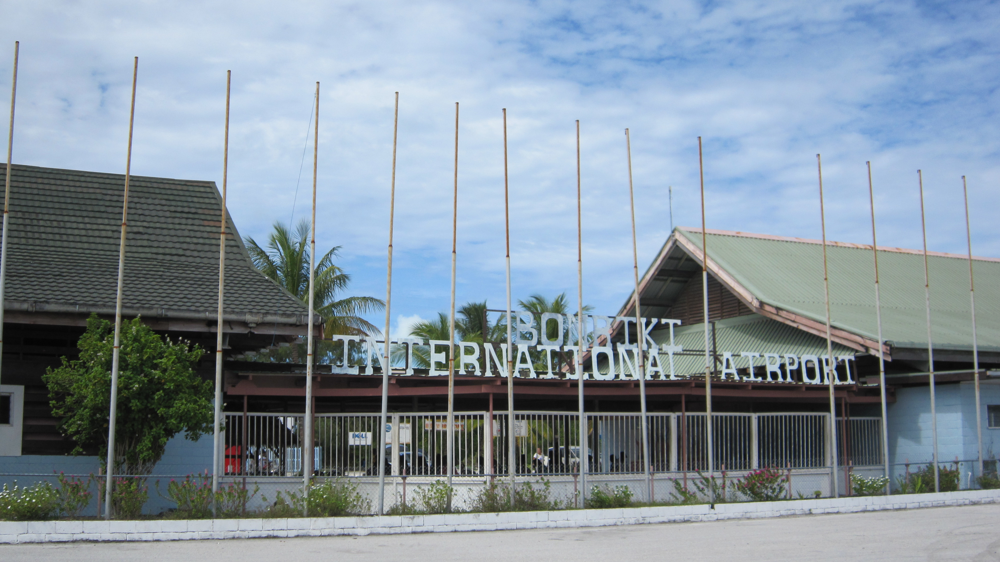
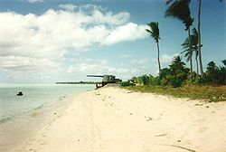
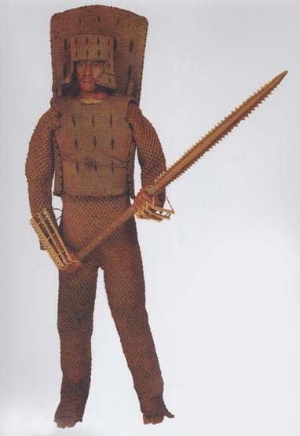
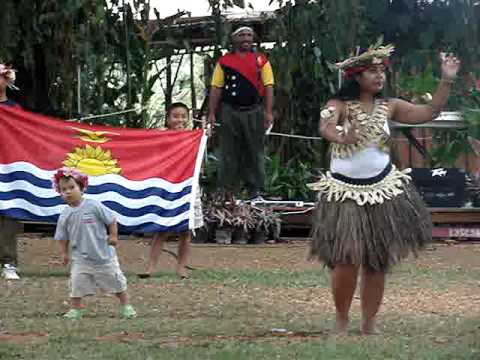
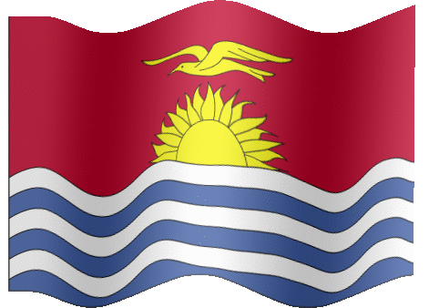
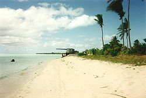
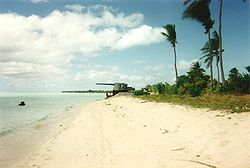

Welcome To Your Dream vacation in the Kiribati Islands. Press any of the buttons to continue.
The Kiribati Islands
The Kiribati Islands are an archipelago in the pacific ocean. The main/capital island is Tarawa. To travel there you need to fly through Fiji to get to bonriki international airport.

The Island of Tarawa had a bloody ww2 battle take place. The battle was fought by the Americans and Japanese during the pacific campaign.
Evidence of the battle still exists in the form of battle plans and left over Japanese defences

Kiribati Culture
Kiribati Independence Day
Kiribati's Independence Day is July 12. This is because Kiribati gained their independence from the United Kingdom on July 12, 1979. This is when the Kiribati Islands changed their name from the Gilbert Islands to the Kiribati Islands. Also in Kiribati, their National Day celebrations last for a few days because the government appoints days of several public holidays during their Independence Day week.
Kiribati Martial Arts

Kiribati has been known for their traditional martial arts which are kept as a secret in several families over generations. Their fighting technique is not like the Asian's martial arts. In Kiribati's martial arts, speed is more important than power. Some of the traditional martial arts are Nabakai, Nakara, Ruabou, Tabiang, Taborara, Tebania, Temataua, Te Rawarawanimon, and Terotauea.
Kiribati Dance

In Kiribati dance there is an emphasis on the outstretch of arms and birdlike movement in the head. The Frigate bird that is on the Kiribati flag represents the kind of birdlike style of dance that the Kiribati people use. While in modern Hawaiian Hula dancers smile, in Kiribati dances smiling is considered vulgar. This is because Kiribati dancing is used as a form of storytelling and a display of the skill of the dancer.
Kiribati Music
Kiribati music is usually based around chanting and other forms of vocalizing and body percussions. Public performances are usually done by a seated chorus with a guitar. During formal performances, a wooden box is used as a percussion instrument. The box is made to give a hollow tone.
Kiribati was discovered in 1788 when the British Captain Thomas Gilbert sighted the islands and named them the Gilbert Islands. Later when the Gilbert Islands gained their independence, they changed their name to Kiribati.
World War II
During World War II, Japan had seized many parts of the Kiribati Islands to form part of their defences. When the allied forces attacked the Japanese forces that had taken place on the Kiribati Islands, it led to some of the bloodiest battles in World War II. These battles were the Gilbert and Marshall Island Campaign which was a series of battles fought from November 1943 to February 1944. These battles were between the United States and Japan. During these battles, a total of about 30,000 people had died, 7000 wounded, and 400 captured.
Kiribati Flag

The Kiribati flag was adopted on July 12 1979. The blue and white bands represent the Ocean that surrounds Kiribati and the golden bird that is flying over the rising sun represents their command of the sea. The bird on their flag is called a gold frigate bird which is a bird that can be found in Kiribati. The frigate bird represents the Kiribati's command of the sea, power, and freedom of the Kiribati.
Tarawa
Tarawa is currently the capital of Kiribati and is best known for being the site of the Battle of Tarawa during WWII. Tarawa has 193 square miles in area. In Kiribati mythology, Tarawa was on the Earth when land, ocean, and the sky had not been cleaved yet by Nareau the spider. This is why they call the sky karawa and the ocean marawa. Nareau also named the piece of land that "Riiki", another god, stood upon when he lifted the sky Tarawa. This is how Tarawa received its name.
 
